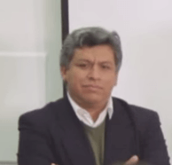

|  | Hello everybody, My name is Luis Peña, I'm a peruvian Industrial Engineer with a Master in Business Administration at Programa de Alta Dirección (PAD) of Piura University. I work for the Universidad de Ingenieria y Tecnología (UTEC) in Lima Perú as a Project Manager and I'm also a professor in operations research and modeling process. I worked as a Production Manager at Southcone (a producer of wood furniture) and at Cervecerías Peruanas Backus & Jhonston too.I´ve always been attracted by the possibility of developing products and projects for improving the quality of life of the people. I´ve found in digital fabrication the possibility of producing objects trying to shorten the times and costs of production and enhancing the value of products. |